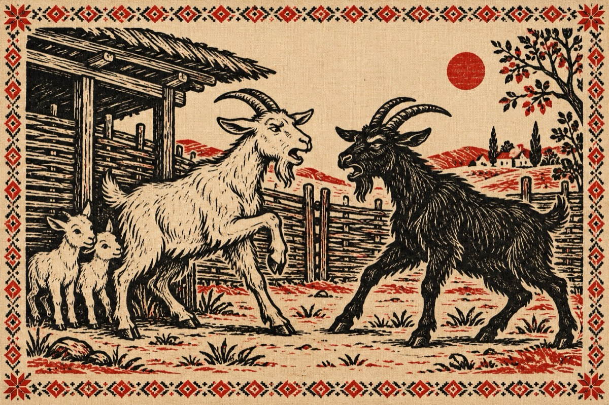

Între capre
ANUNȚ
– Două capre-ncornorate
Se certau de la un țap
Cum că au fost înțelate
De acest țap, care își făcea de cap!
ALBA
– Eu ți-am spus de la-nceput
Că am doi iezi, ca rupți din soare.
Ce cu țapul i-am făcut
Ce-ai atâta supărare?
NEAGRA
– Cu altul sau cu nealtul
Cum îl crezi că e cinstit?
A umplut cu iezi tot satul
Pe mine m-a păcălit!
ALBA
– El săracul nu-i de vină
Nu el la capre se duce
Ele la el dau să vină
Fiindcă știe să le-mpace!
Cred că le și satisface!...
NEAGRA
– Vai dragă nu ți-e rușine
Uite câți copii ne-ascultă
Vorbești singură cu tine
Ține-ți gura, rămâi mută!
ALBA
– Să se știe că acest țap
Face mereu treabă bună
Și că nu-și face de cap
Caprele la el s-adună
Și îți mai spun ca să știi,
El este stăpânul stânii.
Văd că nici nu ai habar!
Și-ar fi mândră să te ții
Că l-au votat ca primar
El le apăra toți iezii!
NEAGRA
– Tu te rog fii mulțumită
Ține la tine cum vezi
Dar nu mă-mpac cu atâta
Vreau și eu să am doi iezi!
Nu la capre să se-mpartă
Și pe mine, ca să mă țină de proastă!
ALBA
– El nu vrea să-ți dea de muncă
Treburile să te cuprindă
Să te țină în osândă
Libertatea să-ți frângă
Te lasă să faci ce vrei
Să te plimbi prin câmp, prin luncă.
NEAGRA
– Tu vorbești de astă dată
Și îmi vinzi gogoși umflate
Nu vezi că-s încornorată
De-acest țap, nu am dreptate?
Nu pot să scot capu-n lume
Nu pot că-mi este rușine.
Tu mă-ndemni la lucruri bune
Dar țapul meu și cu tine el se ține
Hai sictir, și să-ți fie rușine!
Vasile Groza